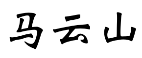

Postdoctoral Research Fellow
NExT++ Research Center
School of Computing
National University of Singapore
Email: yunshan dot ma at u dot nus dot edu dot com or mysbupt at gmail.com
• Google Scholar Page • GitHub Page
Biography
I am a Postdoctoral Research Fellow in National University of Singapore, where I am a member of NExT++ Research Center, supervised by Prof. Chua Tat-Seng. Moreover, I have served as the PC member for top-tier conferences including SIGIR, KDD, and the invited reviewer for prestigious journals including TKDE, TOIS, and TMM.
Prospective Ph.D., Master, and Undergraduate Students
I am looking for highly motivated students (PhD, master, undergraduate students) to work together on multimodal event forecating, computational fashion, and recommender system. Please feel free to send me your CV and transcripts, if you have interest. We are also actively looking for opportunities in research, partnership and commercialization in exciting data science projects.
News
Invariant Collaborative Filtering to Popularity Distribution Shift.
GIF: A General Graph Unlearning Strategy via Influence Function.
Addressing Heterophily in Graph Anomaly Detection: A Perspective of Graph Spectrum.
Boosting Causal Discovery via Adaptive Sample Reweighting.
Learning Graph-based Code Representations for Source-level Functional Similarity Detection.
Causal Inference for Knowledge Graph based Recommendation.
Alleviating Structural Distribution Shift in Graph Anomaly Detection.
Cooperative Explanations of Graph Neural Networks.
Incorporating Bias-aware Margins into Contrastive Loss for Collaborative Filtering.
User Perception of Recommendation Explanation: Are Your Explanations What Users Need?.
Equivariant and Invariant Grounding for Video Question Answering.
Let invariant Rationale Discovery inspire Graph Contrastive Learning.
Causal Attention for Interpretable and Generalizable Graph Classification.
CrossCBR: Cross-view Contrastive Learning for Bundle Recommendation.
Reinforced Causal Explainer for Graph Neural Networks.
Time-aware Path Reasoning on Knowledge Graph for Recommendation.
TELL: Log Level Suggestions via Modeling Multi-level Code Block Information.
Invariant Grounding for Video Question Answering.[Oral Presentation & Best Paper Finalist]
Temporal Feature Alignment and Mutual Information Maximization for VideoBased Human Pose Estimation.[Oral]
ShadeWatcher: Recommendation-guided Cyber Threat Analysis using System Audit Records.
Discovering invariant rationales for graph neural networks.
Highlights
Honors and Awards
Background
Supervisor: Prof Tat-Seng Chua
Supervisor: Prof Tat-Seng Chua
Supervisor: Prof Tat-Seng Chua; Mentor: Prof Xiangnan He, Prof Liqiang Nie